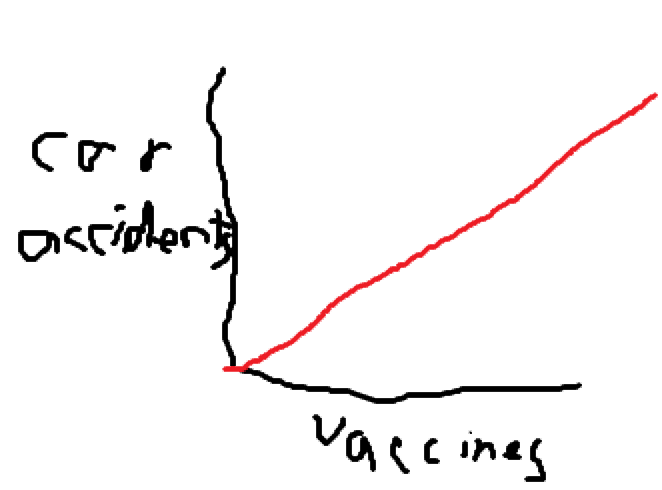

COVID-19 is a Liberal Myth
Doesn't Exist
Ask yourself - have you ever seen the coronavirus? Can you hold a coronavirus? What does a coronavirus sound like? Scientists tell us that we can be hurt by invisible particles, that we can't see but are everywhere, but only some of them are bad, and thousands already live in our gut - sounds like witchcraft to me. No, the idea of viruses, germs, and bacteria was created to hide the real problem: 5G radiation, created by Bill Gates to kill anyone who criticises apple.
Isn't That Bad
Even if this "virus" thing exists, it barely kills anyone. In the country of the Tonga, the World Health Organisation says there have been 0 cases and 0 deaths. This gives tonga a survival rate of ZeroDivisionError: division by zero%, meaning the survival rate is so high it can't even be displayed on a calculator. This means that, according to the World Health Organisation, the coronavirus is literally harmless, so there's no need to worry.
Vaccines
Microchipping
Looks like Bill Gates is at it again; he's now adding microchips to vaccines so that he can track you. This will let him team up with Jeff Bezos to fly a small drone in front of you that shows you ads while you walk, and hire paid actors to walk around near you holding branded products for product placement in real life. It's an obvious business decision to make - people can use adblockers online, but if you track them and advertise to them in person they can do nothing about it.
Magnetism
As we all know, vaccines contain metals such as mercury, iron and kryptonite. While these elements have negative health effects on their own, they are also all magnetic. This is why we have seen an increase in pedestrian deaths in care accidents, as this graph clearly displays. The magnets in the vaccines attract nearby cars, causing car accidents.
back to topSources
This website strives to give you the best sources possible, which is why we've decided to show you what they are below. All of these sources are trustworthy and come from established scientific journals, so you can be sure that our information is 100% accurate!
mining bitcoin, please keep this tab open...